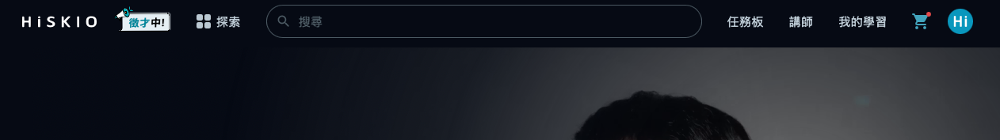
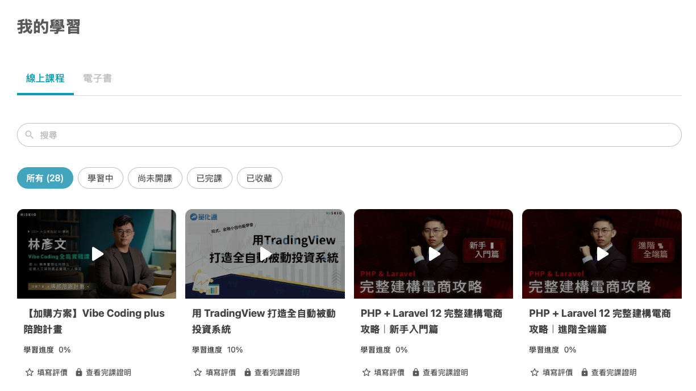
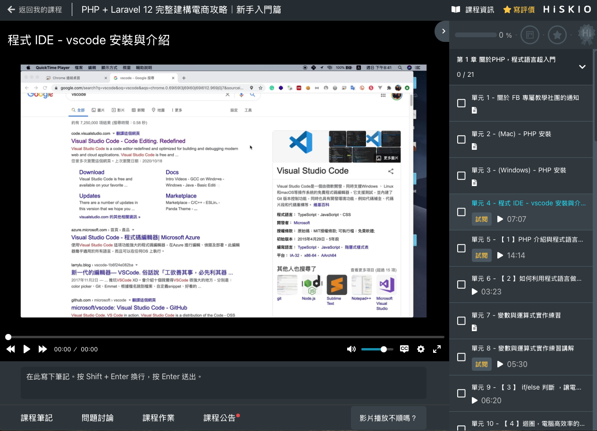

完成課程購買後，本篇帶你了解如何開始上課、HiSKIO 上課介面有什麼功能，以及學習過程中可使用的工具。
完成購買後，到哪裡看課程？
1. 點選右上方的【我的學習】
登入 HiSKIO 帳號後，直接點選網站右上方的【我的學習】即可。

2. 在「我的學習」看到所有已購買的課程
進入「我的學習」後，可看到帳號內所有已購買的課程。

💡 如果在「我的學習」找不到你已經買的課程，可能是登入到不同帳號了，請參考 帳號查詢與「課程不見了」排解。
3. 點擊任一堂課，進入上課介面
點擊任一堂課的封面，即進入上課介面開始學習。

⚠️ 重要提醒：若你點擊**沒有標記【試閱】**的課程單元，系統會判定你已開始學習該課程，將不符合退費資格。如果還在評估是否要退費，請務必先閱讀 退費規定｜如何申請退費。
上課介面有什麼？
進入課程後，主要可以看到：
- 影片播放區：播放課程影片，可調整解析度、播放速度
- 章節目錄：列出所有單元，可自由切換
- 問題討論：與講師、同學就課程內容互動
- 筆記功能：邊看邊做筆記
- 作業繳交區：若課程提供作業單元，可在此上傳作業
學習工具
筆記
可在邊看影片時記下重點。詳細操作請參考 如何製作、查詢筆記。
學習進度
系統會自動記錄你的觀看進度，單支影片觀看達 90% 時系統會自動標記為已完成。你也可以在「我的學習」頁面查看每堂課程的整體進度。
問題討論
若對課程內容有疑問，可在課程頁面下方的【問題討論】區留言，講師會盡快回覆。也可以瀏覽其他同學已被解答的問題，或許能找到解答。
作業繳交
若課程提供作業單元，於該單元頁面下方可上傳作業檔案。
💡 若沒看到繳交按鈕，請嘗試重新整理頁面。
課程評價
學習過程中或完成課程後，皆可在課程頁面留下評價分享心得。詳細規範請參考 HiSKIO 課程評價規範。
完課證明
完成全部單元後可申請完課證明。詳細條件與申請方式請參考 完成課程後，會提供完課證明嗎？。
在不同裝置上課
HiSKIO 提供手機友善的網頁版，平板、手機與電腦皆可正常使用，使用相同的 HiSKIO 帳號登入即可。
行動裝置建議瀏覽器
- iPhone / iPad：Safari 或 Chrome
- Android：Chrome
多裝置同時觀看
若你在多個裝置同時播放同一堂課，另一端裝置將會被強制登出，建議選定一個主要裝置進行學習。
學習中遇到問題
狀況 | 該看哪一篇 |
|---|---|
影片播放卡頓、黑畫面、無法載入 | |
找不到購買的課程 | |
想退費 |
仍無法解決？
請聯繫客服並提供：
- 註冊時使用的 Email
- 課程名稱與遇到問題的單元
- 你使用的裝置／瀏覽器
- 錯誤訊息或畫面截圖
更新時間： 07/05/2026